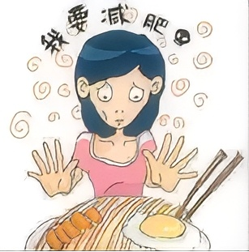

神经性厌食症
神经性厌食症（anorexia nervosa，ICD-11作神经性厌食），俗称厌食症（anorexia），是一种进食障碍。
一般分别为：“自我约束型”以及“暴饮暴食型”。其中“自我约束型”厌食患者占多数，此型患者会万分担心体重过重因而约束自己的进食量。
自我约束型
该类患者或简称厌食症患者，会出现以下症状：体重不足、营养不良、害怕体重增加、非常渴望变瘦，并因而限制卡路里的摄取。
尽管厌食症患者实际上体重过轻，但患者仍然会认为自己太胖。当被问到关于这方面的问题，他们会否认自身存在体重不足的问题。 厌食症患者通常会频繁的量体重，只吃一点点东西甚或只吃某些东西。部分患者会出现运动过量、强迫呕吐或使用缓泻剂试图减重。
分布特征
AN的发病年龄及性别特征国内外相仿:
主要见于13～20岁之间的年轻女性，其发病的两个高峰为13～14岁和17～18或20岁，30岁后发病者少见，围绝经期女性偶可罹及；
AN病人中男性仅有5%～10%，男女比例为1∶10。在欧美，女性AN的终生患病率为0.5%～3.7%；AN的年发病率为3.70‰～4.06‰。
AN在高社会阶层中比低社会阶层中更普遍，发达国家高于发展中国家，城市高于农村。
病因探究
涉及社会文化、心理学和生物学等多方面
近年来，随着全球化的发展，广告业飞速发展、饮食习惯发生改变、健身行业大量涌现以及妇女社会角色发生转变，“苗条”的文化压力以及大量的媒体信息和营销策略营造出节食促进成功这样的氛围，并且女孩在早年社会化过程中很容易被误导，认为苗条的女性比胖的女性更具有吸引力、更成功。
AN患者病前可有一定的性格特征，比如低自尊、完美主义、刻板固执、保守欠灵活、敏感多虑、严谨耿直、内向拘谨、胆怯退缩、多动好胜、自尊心强、自我中心、不合群、幼稚、好幻想、不能坚持己见、犹豫不决等，对成功或成就的要求非常高。
临床资料证实，人际关系紧张，学习、生活遭受挫折，压力过大，新环境适应不良，家庭不和睦，家庭成员发生意外，重病或死亡，以及自身的意外事件导致精神情绪抑制因素与AN有关。
一些儿童平时偏食、挑食、好吃零食等不良饮食习惯，父母有过度关注子女饮食，反复唠叨，强迫进食，反而降低了儿童摄食中枢的兴奋性，进而发展为AN。
遗传因素在AN的发病中起一定作用，这由家系研究和双生子研究证实，不过，AN的遗传方式和基因位点尚未确立。有关AN的神经生物学已展开了深入研究，涉及的神经递质有5-羟色胺（5-HT）、去甲肾上腺素（NE）、多巴胺（DA）等， AN还存在多种神经内分泌异常，多种激素或神经肽与食欲、饱感有关，并且不同激素或神经肽之间存在多种复杂的相互作用；对大多数的神经内分泌失调而言，它们是状态相关的，往往在临床恢复后亦恢复正常。 脑影像学方面，有多项CT研究显示AN患者在长期饥饿时有CSF间隙扩大（脑沟和脑室扩大），有一项研究发现体重增加后又恢复；功能影像研究发现AN患者额叶和顶叶皮层代谢和灌注降低，并推测局部5-HT功能紊乱。